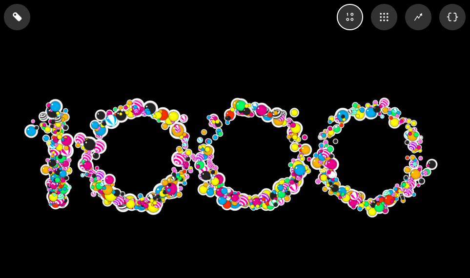
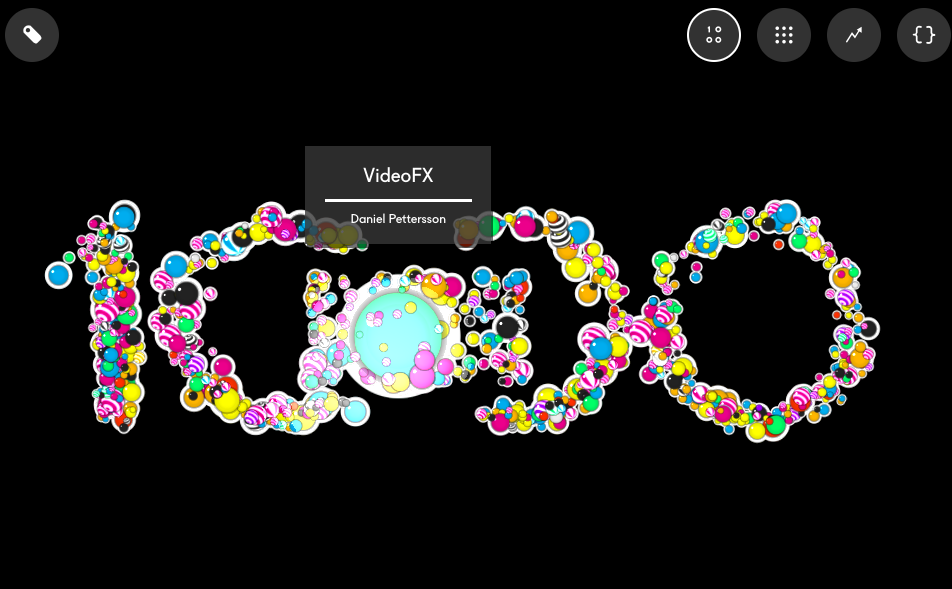
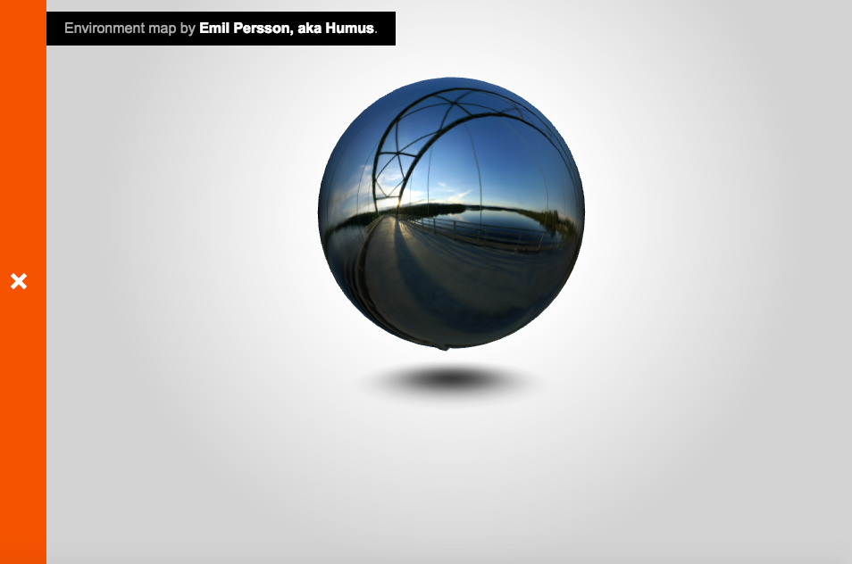
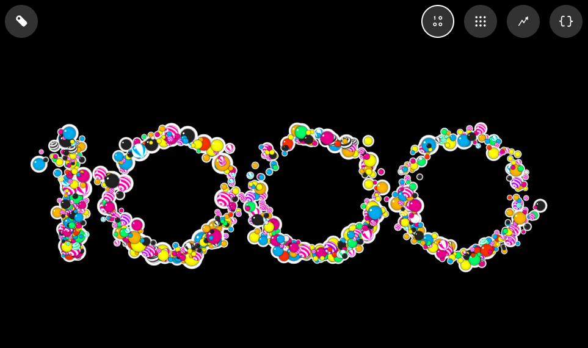
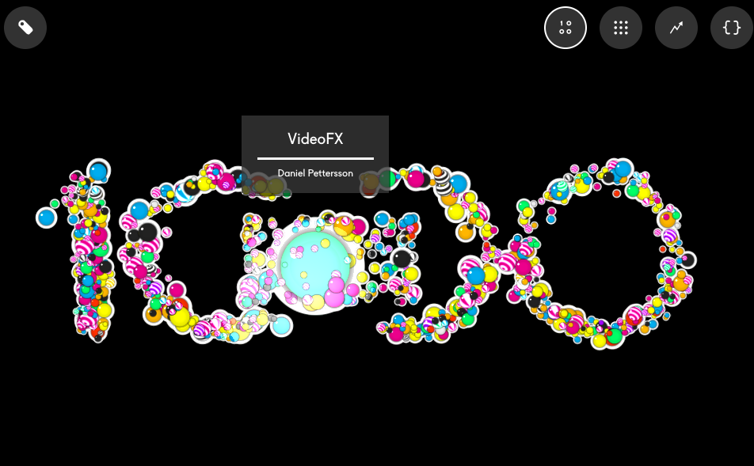
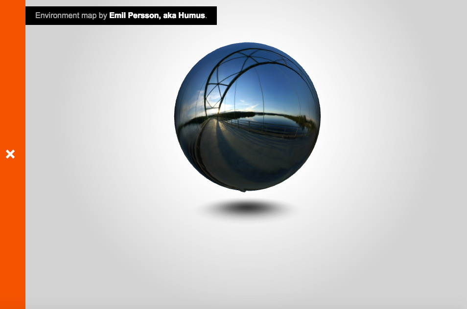
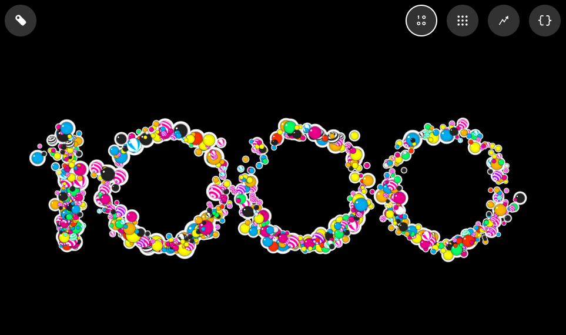
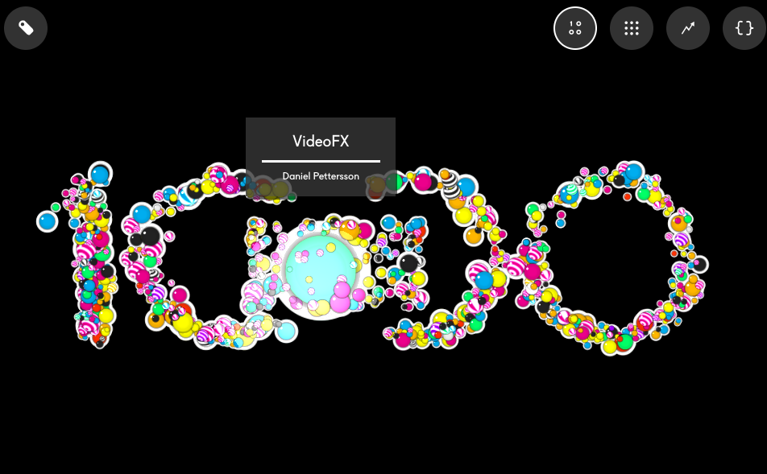
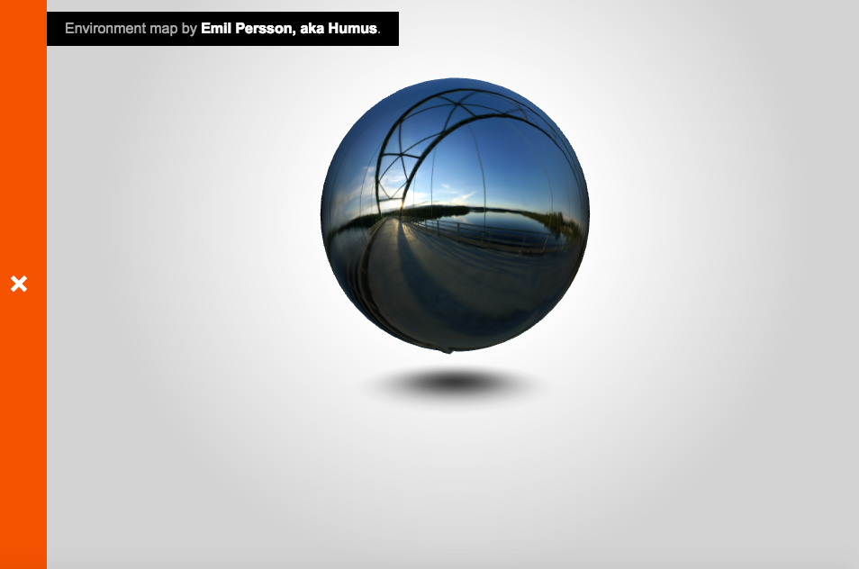

My Page About Always and Forever Computer Entertainment Website
I chose this site rather than the chrome experiments site because I enjoyed the design of the page more
Here is a list of the qualities I enjoy about the Always and Forever website
It gives you a preview of what each link is about before you click on it.
It really draws you in with the video in the background, but at the same time it is not too distracting
I really enjoy not only the design of the logo, but how the girls skirt is flowing
Each link is clear and help, not confusing, and visually stimulating
The majority of the site kind of reminds me of this, which is cool
If you click the link labeled "Playthings" this video showing virtually reality and the game play things will come up!
If you click onto the link titled Chrome Experiment #1000 it will bring you to a page that looks like this

But when you start to move your mouse around on the number 1000 the number starts to bubble up with different colors, and if you stop on one bubble it links you to a different page like this


 If you click the link labeled "Playthings" this video showing virtually reality and the game play things will come up!
If you click onto the link titled Chrome Experiment #1000 it will bring you to a page that looks like this

But when you start to move your mouse around on the number 1000 the number starts to bubble up with different colors, and if you stop on one bubble it links you to a different page like this


If you click the link labeled "Playthings" this video showing virtually reality and the game play things will come up!
If you click onto the link titled Chrome Experiment #1000 it will bring you to a page that looks like this

But when you start to move your mouse around on the number 1000 the number starts to bubble up with different colors, and if you stop on one bubble it links you to a different page like this

